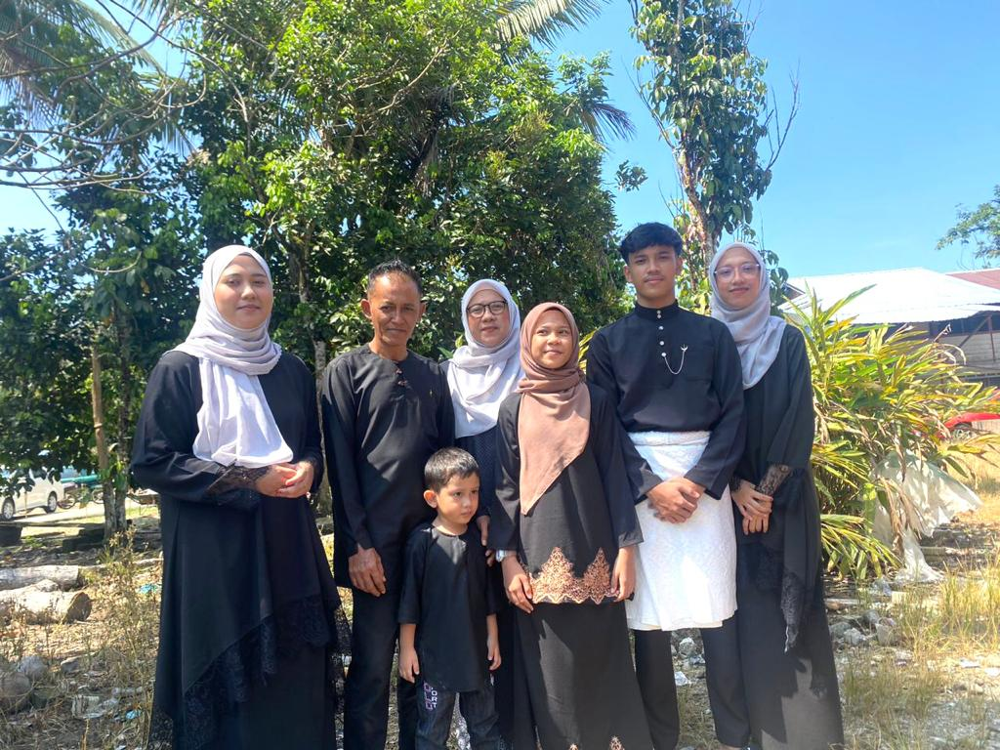

|  |
| MY LOVELY FAMILIES | NAME | RELATIONSHIP |
|---|---|---|
| Zulkifli Bin Mohd | Father | |
| Siti Khadijah Binti HJ.Ridi | Mother | |
| Natasya Adila | 1stSister | |
| Natasha Nadira | 2nd Sister | |
| Hanif Haikal | 1st Brother | |
| Natasha Ainaa Damia | 3rd Sister | |
| Hanif Al-Ziyyad | 2nd Brother |
My large family consists of seven persons. My father, Zulkifli Mohd, is the patriarch of our family and is 50 years old. He is from Kelantan. He works for FGV as a farmer. My father is never impolite and always pays his kids good attention. My mother, Siti Khadijah, is next. She is currently 48 years old, a housewife, and a native of Perak.Due to her desire for her kid to lead a good life in the future, my mother can be a little tough, especially when it comes to academics. My mother frequently serves as a gentle reminder of the necessity of being cautious when entering the private spaces of others She does, however, frequently check in on his son, who is studying far away in a different state, and lets her know if we needs anything. My sister, who is 22 years old, is still enrolled in POLI Jitra. She is both my sister and a friend because we are able to borrow items from one other and share stories thanks to our somewhat common hobbies. Hanif Haikal, my brother, comes next. He just completed his SPM exam and is 18 years old. He is currently still awaiting the outcome of the decision, and in order to make it easier for him to travel around as he pleases, he is also getting a driver's licence during this time. When at home, my brother always uses technology to play mobile games with his mates. Other than that, Natasha Ainaa Damia, also known as Damia, is my third sister. She is still in primary school at the age of eleven. Without being asked, Damia completes her coursework with diligence. He does, however, have a tendency to always become irate when she doesn't get her way. My last brother, the youngest of our siblings. He will turn 4 in June and is currently 3 years old. Even though he is the youngest, he is the most adored. When I first saw it, I was ecstatic, and I now miss it. That concludes the topic of my family.